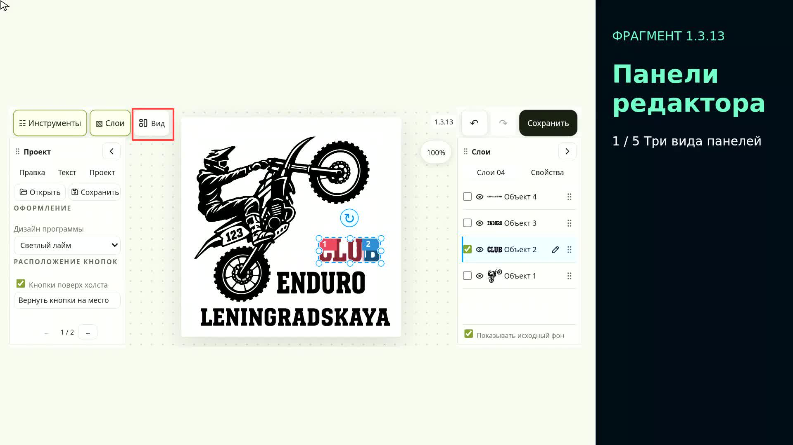

Открыть редакторФрагмент 1.3.13: больше места для картинки
Справа от «Слои» появилась кнопка «Вид». Выберите узкие панели, плавающие панели или плитки. Названия объектов и переименование сохранены.
- Нажмите «Вид» справа от «Слои» и переключите три раскладки. Изображение, правки и выбранный объект должны оставаться.
- Нажмите стрелку вверху панели: панель → значки → маленькая стрелка → панель.
- Удерживайте заголовок «Проект», «Правка», «Текст» или «Слои» полсекунды. Передвиньте весь модуль и отпустите. Это не перемещает сам логотип.
- Выберите объект и нажмите карандаш в списке слоёв, чтобы изменить имя. Длинное имя можно открыть полностью в окне переименования.
- Перезапустите приложение: выбранный вид и положение модулей сохраняются. В окне «Вид» значок круговой стрелки возвращает панели на место.

19 секунд · Silero Ксения · новые панелиТри вида в настоящем редакторе